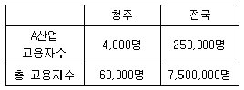
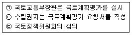

도시계획기사 (2015-05-31 기출문제)
1과목: 도시계획론
1. 다음 중 도시조사자료에 대한 설명으로 옳지 않은 것은?
- 1차 자료는 도시계획의 대상이되는 단위지역이나 당해지역의 주민들로부터 현지조사나 관찰, 면접 등을 통해서 직접적으로 도출한 자료이다.
- 2차 자료는 연구자가 탐구하고자 하는 현상에 대한 정보를 담고 있는 기존의 여러 가지 기록을 의미하는 것으로 서적이나 간행물, 각종 통계자료 등이 해당된다.
- 2차 자료에 비해 1차 자료는 비교적 적은 노력과 비용으로 계획가가 원하는 정확한 정보를 얻을 수 있다.
- 도시계획을 위한 도시조사에서는 1차 자료에 대한 조사와 2차 자료에 대한 조사를 병행하는 것이 일반적이다.
(정답률: 83%)

2. 다음 중 도시계획을 둘러싼 최근의 경향으로 보기 어려운 것은?
- 각종 개발사업에 있어 민간자본의 참여 축소
- 환경문제에 대한 의식 증대
- 지방정부의 권한 강화 및 각종 이해집단의 영향력 증대
- 도심활성화와 복합용도지구의 확산
(정답률: 86%)
3. 1970년대 중반 이후 미국에 도입된 성장관리정책에 대하여 넬슨(Arthur C. Nelson)과 듀칸(Janes B. Ducan)이 제시한 목적과 거리가 먼 내용은?
- 경제적 형평성 제고
- 효율적인 도시형태의 구축
- 납세자의 보호
- 어반 스프롤의 방지
(정답률: 54%)
4. 계획이론 중 다비도프(Davidoff)에 의해 주창되었으며, 1960년대 미국의 법조계에서 형성된 피해구제절차와 같은 사회제도를 계획 개념으로 수용하여 주로 강자에 대한 약자의 이익을 보호하는데 적용된 이론은?
- 종합적 계획
- 교류적 계획
- 옹호적 계획
- 급진적 계획
(정답률: 91%)
5. 저층주택을 중심으로 편리한 주거환경 조성을 위한 용도지역은?
- 제1종전용주거지역
- 제2종전용주거지역
- 제1종일반주거지역
- 제2종주거전용지역
(정답률: 67%)
6. 토지이용계획 수립과정은 상향적 접근과 하향적 접근방법이 있다. 다음 중 상향적 접근이라 할 수 없는 것은?
- 상세한 현황조사를 통해 지구를 구분하고 지구마다의 계획과제를 도출하여 지구수준의 계획을 세운다.
- 인구 및 경제 전망 또는 상위계획의 지침을 받아 도시의 인구, 산업, 토지 등에 대한 기본계획을 설정한다.
- 도시의 기본구조와 상위계획을 토대로 지구계획을 집대성하여 도시전체의 토지이용계획을 입안한다.
- 기존 도시의 축적(stock) 상태를 중요시하고 지구단위의 계획조건이 중요시 된다.
(정답률: 66%)
7. 영국에서 도시계획을 총괄하는 기본법은?
- 연방건설법
- 도시기본법
- 국토이용계획법
- 도시농촌계획법
(정답률: 75%)
8. GIS를 이용한 주요 활동 중에서 ‘4M'에 해당하지 않는 것은?
- 도면화(Mappung)
- 측정(Measuremnent)
- 관찰(Monitoring)
- 수정(Modification)
(정답률: 68%)
9. 도시화의 진행과정으로 옳은 것은?
- 집중적 도시화 - 역도시화 - 분산적 도시화
- 분산적 도시화 - 집중적 도시화 - 역도시화
- 집중적 도시화 - 분산적 도시화 - 역도시화
- 분산적 도시화 - 역도시화 - 집중적 도시화
(정답률: 80%)
10. 현대도시와 관련한 계획가와 관련 및 주장의 연결이 옳은 것은?
- 멈포드(L. Mumford) - 근린주구단위계획
- 르 코르뷔제(Le Corbusier) - 대런던계획(Greater London Plan)
- 라이트(F. L Wright) - 브로드에이커시티(Broad acre City)
- 아베크롬비(P. Abercrombie) - 보아잔계획(Plan Voisin)
(정답률: 72%)
11. 다음 중 존 프리드만(John Frirdmann)이 각각의 사상적 배경이 되는 학문적 전통에 따라 분류한 계획이론 중 옳지 않는 것은?
- 사회맥락(Social context)이론
- 사회동원(Social mobilization)이론
- 사회학습(Social learning)이론
- 사회개혁(Social refiom)이론
(정답률: 73%)
12. 20세기 이후에 발표된 도시계획헌장들 중 최초의 도시계획 현장으로서, 이후 전 세계 도시계획 및 설계분야의 발전에 많은 영향을 미친 것은?
- 아테네(Athens)헌장
- 뉴어바니즘(New Urbarnism)헌장
- 메가리드(Megaride)헌장
- 맞추피추(Machu-Picchu)헌장
(정답률: 87%)
13. 다음 중 도시ㆍ군관리계획의 내용에 해당하지 않는 것은?
- 용도지역ㆍ용도지구의 지정 또는 변경에 관한 계획
- 공간구조, 생활권의 설정 및 인구의 배분에 관한 계획
- 개발제한구역ㆍ도시자연공원구역ㆍ시가화조정구역ㆍ수산자원보호구역의 지정 또는 변경에 관한 계획
- 도시개발사업이나 정비사업에 관한 계획
(정답률: 57%)
14. 다음 중 4단계 교통 수요추정법에 대한 설명으로 옳지 않은 것은?
- 교통수요 추정에서 전통적으로 가장 많이 사용되어온 방법이다.
- 총체적 자료에 의존하기 때문에 통행자의 행태적 측면은 거의 고려하지 않는다.
- 계획가나 분석가의 주관이 개입될 여지가 전혀 없다는 특징이 있다.
- 분석결과에 대한 적절성을 검증하면서 순서적으로 추정해가는 장점이 있다.
(정답률: 82%)
15. 토지이용계획의 수립과정에서 가장 우선적으로 설정하는 것은?
- 토지의 용도별 수요예측
- 현황조사 분석
- 토지의 용도별 입지배분
- 목표설정
(정답률: 65%)
16. 다음 중 도시의 구성요소에 대한 설명으로 옳지 않은 것은?
- ‘시민’은 도시를 구성하는 가장 기본적인 요소인 동시에 도시가 존재하는 이유이기도 하다.
- 게데스(P. Geddes)는 ‘도시 활동’을 생산과 소비로 구분하였다.
- ‘토지’와 ‘시설’은 도시 공간상에서 물리적 상태로 존재하며, 도시의 형태를 만들어내게 된다.
- ‘토지’와 ‘시설’에 대한 물리적 계획의 3대 요소는 밀도, 동선, 배치라고 할 수 있다.
(정답률: 78%)
17. 계획인구의 산정 방법 중 과거 추세에 의한 방법이 아닌 것은?
- 로지스틱 곡선법
- 집단생잔법
- 지수함수법
- 최소자승법
(정답률: 69%)
18. 다음 중 도시의 특성으로 옳지 않은 것은?
- 높은 인구밀도
- 동질성이 높은 사회
- 익명성의 증가
- 기능의 집적과 분화
(정답률: 74%)
19. 도시계의 민주화와 공개화를 위해 지역주민에게 공청회나 의견청취 등의 기회를 부여하는 주민참여가 제도화 된 시기로 맞는 것은?
- 1960년대
- 1970년
- 1980년
- 1990년
(정답률: 80%)
20. 다음의 도시 가로망 형태 중 도시의 기념비적인 건물을 중심으로 주변과 연결하고 중심지를 기점으로 주요간선로를 따라 도시의 개발축을 형성하는 특징을 갖는 것은?
- 격자형
- 방사형
- 혼합형
- 선 형
(정답률: 84%)
2과목: 도시설계 및 단지계획
21. 도시공원 및 녹지 등에 관한 법령상 어린이공원의 규모와 유치거리 기준이 모두 옳은 것은?
- 1,500m2이상, 200m 이하
- 1,500m2이상, 250m 이하
- 2,000m2이상, 200m 이하
- 2,000m2이상, 250m 이하
(정답률: 83%)
22. 페리(C,A Perry)가 구상한 근린 생활권을 결정하는 보행거리의 기준은?
- 600m
- 800m
- 1.600m
- 2,000m
(정답률: 82%)
23. 다음 중 공동주택의 일조 등의 확보를 위한 높이 제한에 대한 설명으로 옳은 것은?
- 같은 대지에서 두 동 이상의 건축물이 마주보고 있는 경우 그 대지의 모든 세대가 하지를 기준으로 9시에서 15시 사이에 2시간 이상을 계속하여 일조를 확보할 수 있는 거리 이상으로 할 수 있다.
- 같은 대지에서 두 동 이상의 건축물이 마주보고 있는 경우 그 대지의 모든 세대가 하지를 기준으로 9시에서 10시 사이에 2시간 이상을 계속하여 일조를 확보할 수 있는 거리 이상으로 할 수 있다.
- 같은 대지에서 두 동 이상의 건축물이 마주보고 있는 경우 그 대지의 모든 세대가 동지를 기준으로 9시에서 15시 사이에 2시간 이상을 계속하여 일조를 확보할 수 있는 거리 이상으로 할 수 있다.
- 같은 대지에서 두 동 이상의 건축물이 마주보고 있는 경우 그 대지의 모든 세대가 동지를 기준으로 10시에서 15시 사이에 2시간 이상을 계속하여 일조를 확보할 수 있는 거리 이상으로 할 수 있다.
(정답률: 84%)
24. 다음 중 교차점광장의 결정 기준으로 옳지 않은 것은?
- 교차지점에서 차량과 보행자의 원활한 소통을 위하여 설치한다.
- 다수인의 집회ㆍ행사ㆍ사교 등을 위하여 필요한 경우에 설치한다.
- 혼잡한 주요도로의 교차지점 중 필요한 곳에 설치한다.
- 자동차전용도로의 교차지점인 경우에는 입체교차방식으로 설치한다.
(정답률: 86%)
25. “막다른 도로의 형태로 통과교통이 최대한 베제되고 도로주변 주민들이 독점적으로 활용할 수 있는 구획도로가 형성되지만 일정한 도로폭을 유지하여야 차량의 회전과 생활공간의 확보가 가능하다.” 위 설명에 적합한 세가로계획 기본패턴은?
- cul-de-sac
- U자형(loop)
- T자형
- 격자형
(정답률: 86%)
26. 근린생활권의 위계가 옳은 것은?
- 근린주구＞근린분구＞인보구
- 근린분구＞근린주구＞인보구
- 인보구＞근린분구＞근린주구
- 근린분구＞인보구＞근린주구
(정답률: 87%)
27. 다음 중 평행주차형식 외의 경우에 일반형과 장애인전용 주차단위구획의 규모 기준이 모두 옳은 것은? (단, ‘너비(m 이상)x길이(m 이상)’ 임)
- 일반형 2.0×6.0 장애인전용 3.3×5.0
- 일반형 2.0×5.0 장애인전용 3.3×5.0
- 일반형 2.3×6.0 장애인전용 3.3×5.0
- 일반형 2.3×5.0 장애인전용 3.3×5.0
(정답률: 67%)
28. 1970년 내덜란드의 델프트시에서 최초로 등장한 보차공존도로는?
- 쿨데삭(cul-de-sac)
- 본 엘프(Woonerf)
- 커뮤니티 도로
- 트랜짓몰(transit mall)
(정답률: 84%)
29. 근린주거구역의 교통을 보조간선도로에 연결하여 근린주거구역 내 교통의 집산기능을 하는 도로로서 근린주거구역의 내부를 구획하는 도로는?
- 주간선 도로
- 보조간선도로
- 집산도로
- 국지도로
(정답률: 81%)
30. 래드번 계획의 특징으로 옳지 않은 것은?
- 대가구(superblock) 개념을 기본으로 한다.
- 자동차도로의 기능을 통합 일원화 하였다.
- 보차분리의 원칙이 강조 되었다.
- 기능에 따른 4가지 종류의 도로로 구분하였다.
(정답률: 72%)
31. 토지의 용도별 수요를 예측하는 원단위로 가장 일반적으로 이용되는 것은?
- 토지이용현황
- 지역 내 교통시설현황
- 한계자원량
- 인구
(정답률: 72%)
32. 도시공원 및 녹지 등에 관한 법률에 의해 도시공원을 생활권공원과 주제공원으로 세분할 때 생활권 공원에 해당되지 않는 것은?
- 어린이공원
- 근린공원
- 지구공원
- 소공원
(정답률: 78%)
33. 다음 중 케빈 린치(Kevin Lynch)가 주장한 도시를 이미지화할 수 있도록 하는 도시의 물리적 구조에 관한 요소에 해당하지 않는 것은?
- 구역(district)
- 링크(link)
- 결절점(node)
- 랜드마크(landmark)
(정답률: 80%)
34. 건축물의 대지는 최소한 몇 m 이상이 도로에 접해야 하는가? (단, 자동차만의 통행에 사용되는 도로는 제외한다.)
- 2m
- 4m
- 6m
- 8m
(정답률: 84%)
35. 다음 중 Litton이 산림경관을 분석하는데 사용한 시각회랑에 의한 방법에서, 경관의 변화요인(variavle factors)에 해당하지 않는 것은?
- 계절(seaon)
- 연속(sequence)
- 거리(distance)
- 시간(time)
(정답률: 63%)
36. 지구단위계획에 대한 도시ㆍ군관리계획결정도의 표시기호가 옳은 것은?
- 공동개발

- 차량진출입구

- 건축한계선

- 공공보행도로

(정답률: 79%)
37. 주거지역의 입지 조건으로 가장 거리가 먼 것은?
- 홍수나 산사태와 같은 재해로부터 안전한 지형적 조건에 입지하는 것이 좋다.
- 주변의 공업단지나 교통시설 등에 의한 대기오염, 소음이나 진동 등으로 인한 피해가 적은 곳이어야 한다.
- 각종 편익시설의이용이 편리한 곳이 유리하다.
- 노동력을 확보하는 것이 용이하여야 한다.
(정답률: 87%)
38. 지구단위계획수립 시 각 용지별 토지이용계획 수립기준으로 틀린 것은?
- 단독주택용지가 아파트용지의 진북방향으로 입지하는 때에는 충분한 이격거리를 유지하도록 하여야 한다.
- 녹지용지는 근린공원, 어린이공원, 완충녹지, 광장, 친수공간 등으로 구획한다.
- 상업용지는 주거용지면적의 5%내외 비율로 계획하되 구역의 경제권 등을 감안할 수 있다.
- 주거용지와 면하는 철도부지면에는 폭 30m미만의 완충녹지, 폭 25m이상의 도시ㆍ군계획 도로변에는 폭 10m미만의 완충녹지를 설치하는 것이 바람직하다.
(정답률: 72%)
39. 다음 중 밀톤케인즈(Milton Keynes) 신도시계획의 주요 내용으로 옳지 않은 것은?
- RED WAY를 통해 차량과 보행자를 분리하고 있다.
- 주요 간선도로는 격자형으로 이루어져 있다.
- 커뮤니티센터는 모든 주택으로부터 500M을 넘지않도록 계획되어 있다.
- 초기의 뉴타운에서와 같이 내부로 향하는 내향적 근린주구로서 계획되었다.
(정답률: 54%)
40. 상업시설의 배치 형식을 크게 집중형과 노선형으로 구분할 때, 노선형의 장점으로 가장 거리가 먼 것은?
- 모든 주민에게 균등한 접근성을 부여한다.
- 장해 수요의 성장과 다양성에 대처할 융통성이 있다.
- 도로와 거주지 사이의 소음 완충지 역할을 한다.
- 시설 상호간의 유기적 관계성이 높다.
(정답률: 66%)
3과목: 도시개발론
41. 현재 인구가 50만명이고 평균 인구증가율이 2.5%인 도시의 경우, 등비급수법에 의해 추정한 20년후의 인구는?
- 약 70만명
- 약 77만명
- 약 82만명
- 약 90만명
(정답률: 63%)
42. 다음 중 부동산신탁의 주요 업무가 아닌 것은?
- 증권업무
- 대리사무
- 중개업무
- 관리신탁
(정답률: 45%)
43. 다음 중 도시개발사업의 타당성 분석에 관한 설명으로 옳지 않은 것은?
- 타당성 분석은 해당 프로젝트 시행 이전에 사전적으로 이루어지는 것이 일반적이다.
- 사업성 분석에서의 기본은 평가지표, 프로젝트의 비용과 수입의 추정이다.
- 프로젝트의 경제정 평가지표로는 비용ㆍ편익비(B/C ratio) 현재가치순편익(PVNB), 내부 수익률(IRR)이 있다,
- 사업성 및 경제성 분석으로 수출기반모형과 다지역투입산출모형이 이용된다.
(정답률: 53%)
44. 다음 중 공사진행속도가 공정표상의 일정보다 지연될 위협인 ‘공사완공 지연위험’을 관리할 방안으로 적합하지 않은 것은?
- 우수시공사와 책임시공에 대한 협약
- 설계 및 설계변경 관리
- CM(construction management)사 선정 및 관리
- 공사완공보험 가입 및 공사 지연 시 지체보상금 부과
(정답률: 65%)
45. 자산담보부증권(ABS)에 대한 설명으로 옳지 않은 것은?
- 자산을 기초로 발행하는 경우에는 대차대조표에는 영향을 미치지 않는 부외금융이라는 이점이 있다.
- 사업주의 신용이 낮은 경우에도 자금을 조달할 수 있다.
- 대출과 달리 유가증권의 형태로 유동화 한다.
- 다른 수단에 비하여 간편하지만 운용보수가 높다.
(정답률: 62%)
46. 물류단지의 계획 중에서 개발수요의 예측 시 다음의 2단계에 고려할 사항은?
- 화물의 유통단지 경유비율 설정
- 조립/가공 기술검토
- 개발계획 분석을 통한 규모 산정
- 법/제도적 검토
(정답률: 61%)
47. 도시개발사업을 할 때 물리적 측면에서의 입지분석 방법이 아닌 것은?
- 토지공부분석
- 자연특성분석
- 기반시설특성분석
- 지역접근분석
(정답률: 43%)
48. 중력모형(Gracity Model)에 관한 설명으로 옳은 것은?
- 개별 소매점의 고객흡입력을 계산하는 방법
- 소비자가 주어진 상업시설을 이용할 확률은 상업시설의 크기에 비례하고 그곳까지 이동하는데 걸리는 시간에 반비례한다는 개념을 적용
- 거리요소, 규모요소, 상수의 세 가지 요소에 의한 모형
- 각 변수들이 수요에 미치는 영향의 정도를 결정해주는 방법
(정답률: 56%)
49. 도시개발법에 “시행자는 도시개발사업을 원활히 시행하기 위하여 특히 필요한 경우에는 토지 또는 건출물 소유자의 신청을 받아 건축물의 일부와 그 건축물이 있는 토지의 공유지분을 부여할 수 있다.” 라고 규정한 내용은 무엇인가?
- 입체환지
- 혼합환지
- 환지예정지
- 공유지분환지
(정답률: 67%)
50. 개발사업 발식 중 “수용 및 사용방식에 의한 개발사업”에서 토지상환채권에 대한 설명 중 옳지 않은 것은?
- 토지등의 매수대금의 일부를 지급하기 위하여 사업시행으로 조성된 토지 또는 건축물로 상환하는 것이다.
- 발행규모는 토지상환채권으로 상환할 토지 또는 건축물이 해당 고시개발사업으로 조성되는 분양토지 또는 분양 건축물의 1/2을 초과하지 아니하도록 한다.
- 토지상환채권은 필요시 공공시행자의 재량으로 발행 후 지정권자에게 통보하여야 한다.
- 토지상환채권의 이율은 발행당시의 은행의 예금금리 및 부동산 수급상황을 고려하여 발행자가 정한다.
(정답률: 62%)
51. 다음 중 도시개발사업 과정에서의 허가(許可)에 대한 설명으로 옳은 것은?
- 허가를 받지 않고 한 행위는 처벌의 대상이 되지 않는다.
- 법령에 의하여 금지되어 있는 행위를 해제하여 적법하게 하는 것을 의미한다.
- 제3자의 행위를 보충하여 그 법률상의 효력을 완성시키는 행위를 말한다.
- 국가 또는 지방자치단체가 특정 행위에 대하여 부여하는 동의의 뜻이다.
(정답률: 69%)
52. 다음 중 국민주택규모의 주택으로서 1세대당 가장 큰 주택의 주거전용면적은? (단, 수도권을 제외한 도시지역이 아닌 읍 또는 몇 지역은 제외한다.)
- 65 제곱미터
- 85 제곱미터
- 1⑤ 제곱미터
- 120 제곱미터
(정답률: 78%)
53. 도시개발계획 수립 시 토지이용 및 시설계획에 관한 내용으로 상업용지 유형별 배치기준 중 선형의 단점이 아닌 것은?(오류 신고가 접수된 문제입니다. 반드시 정답과 해설을 확인하시기 바랍니다.)
- 도로의 교통체증, 인구 밀집현상 초래
- 주거지역과 중복 지정될 경우 주거지역 전체가 상가화 될 우려가 있음
- 도시미관 손상의 우려가 있음
- 지가, 유통체계, 주차문제의 해결 등이 어려움
(정답률: 38%)
54. 도시환경 및 시설에 대해 현재까지는 불량ㆍ노후화 현상이 발생하지 않았으나 현 상태로 방치할 경우 환경악화가 예상되는 지역에 예방적 조치로 시행하는 재개발 방식은?
- 철거재개발
- 수복재개발
- 개량재개발
- 보전재개발
(정답률: 51%)
55. 프로젝트의 사업성을 평가하는 지표들과 관련된 설명으로 옳지 않은 것은?
- 재화의 가치평가에 있어 시장가격이 기준이 된다.
- 세금, 이전비용에 대해서도 일반적으로 고려한다.
- 내부수익률이 자본비용보다 클 때 프로젝트는 사업성이 있는 것으로 본다.
- 지표로는 수익성지수, 순현재가치, 내부수익률이 있다.
(정답률: 46%)
56. 도시(부동산)개발을 위한 자금조달 수단 중 신디케이션, 공동, 합작사업과 같은 지분조달방식에 대한 설명으로 옳지 않은 것은?
- 지분투자자가 항상 사업계획에 동의하는 것은 아니므로 이에 따른 문제의 발생도 고려하여야 한다.
- 지분투자로 자금을 조달하게 되면 투자금액을 상환하지 않아도 되므로 특히 현금이 긴요할 때 사용할 수 있는 주요 투자수단이 된다.
- 회사 통제권의 일부를 포기해야 한다는 단점이 있다.
- 중소기업의 경우 신용이 취약한 기업은 차입수단, 규모, 시기, 비용상의 문제점이 존재한다.
(정답률: 48%)
57. 도시개발사업의 보호에 관한 내용으로 틀린 것은?
- 공시송달
- 관계서류의 열람
- 보조 또는 융자
- 공공시설의 처분제한
(정답률: 46%)
58. 다음 중 수출기반모형이 요구하는 가정 사항이 아닌 것은?
- 동일한 노동 생산성
- 동일한 소비 수준
- 폐쇄된 경제
- 동일한 생산비
(정답률: 38%)
59. 개발형태에 의한 개발사업의 분류는 크게 신개발사업과 재개발사업으로 분류되고 있는데 다음 중 신개발사업에 포함되지 않는 것은?
- 건축물 증개축사업
- 토지형질변경사업
- SOC사업
- 도시개발사업
(정답률: 59%)
60. 다음 중 근대도시운동에서 1928년 근대건축국제외의(ClAM)에 관한 내용으로 옳지 않은 것은?
- 공업기술이 가져온 무한히 크고 새로운 자원과 방법을 활용해야 한다고 주장하였다.
- 도시의 시간적 변화와 성장에 맞춰 단기적이고 즉각적인 전환과 변신에 대응하려고 하였다.
- 기능주의를 부각시켜 지역지구제, 보차분리 등의 계획개념을 도입하였다.
- CIAM의 정신에 의해 세워진 대표적인 도시로 샹디가르와 브라질리아가 있다.
(정답률: 60%)
4과목: 국토 및 지역계획
61. 다음의 조건에서 청주의 A산업에 대한 입지계수(L, Q)는 얼마인가?

- 0.07
- 0.75
- 1.67
- 2.00
(정답률: 67%)
62. 기준년도의 인구와 출생율, 사망률 및 인구이동 등의 변화요인을 고려하여 장래의 인구를 추정하는 방법은?
- 선형보형(linear growth model)
- 비율적용법(ratio method)
- 로지스틱커브법(logistic curve method)
- 집단생잔법(cohort survival method)
(정답률: 78%)
63. 다음 중 국토기본법상 국토종합계획에 포함되는 내용이 아닌 것은?
- 재정확충 및 도시ㆍ군기본계획의 시행을 위하여 필요한 재원조달에 관한 사항
- 국토의 현황 및 여건변화 전망에 관한 사항
- 주택, 상하수도 등 생활여건의 조성 및 삶의 질 개선에 관한 사항
- 지하공간의 합리적 이용 및 관리에 관한 사항
(정답률: 53%)
64. 포디즘(Fordism)은 1900년대 초에 대두하여 한 시대를 풍미하다 1970년대에 이르러 그에 반하는 후기포디즘(Post Fordism)으로 대체된다. 다음 중 포디즘에 관한 설명으로 적합지 않은 것은?
- 포디즘 사회에서는 대규모 도시, 대규모 공장, 대규모 노동력 등을 통해 규도의 경제 및 집적의 경제를 추구한다.
- 포디즘 하의 국가는 사회복지에 대한 재정지원을 강화하고 공공서비스에 대한 예산지원을 확대하고 있다.
- 포디즘 사회에서는 공공 임대주택사업이나 노숙자 관리 등을 비열리 기관, 제3섹터, 민간기구등에서 담당한다.
- 포디즘 사회에서는 국가 경제의 성장에 역점을 두고 국가가 주도적으로 경제발전을 추진해 나간다.
(정답률: 70%)
65. 합리적 계획모형을 비판하는데서 출발하여 계획은 자본주의 생산양식의 관점에서 분석되어야 하며 특정 이념에만 기능하는 대신 역사적 관계와 정치ㆍ사회ㆍ경제적 맥락을 전반적으로 조명하여야 한다고 강조하는 지역계획모형은?
- 혼합주사적 계획(mixed scanning)모형
- 옹호적 계획(advocacy plannong) 모형
- 교류적 계획(transactive plannong) 모형
- 정치경제 계획(political economy planning) 모형
(정답률: 73%)
66. 다음의 용도지구 중 주거기능ㆍ상업기능ㆍ공업기능ㆍ유통물류기능ㆍ관광기능ㆍ휴양기능 등을 집중적으로 개발ㆍ정비할 필요가 있을 때 지정되는 지구는?
- 개발진흥지구
- 보존지구
- 시설보호지구
- 특정용도제한지구
(정답률: 80%)
67. 1950-1960년대의 자원 개발과 관련한 지역개발철학은 하향적이고 엘리트 의식주의 성향이 강하였으나 70년대 이후에는 여기에 반발하여 새로운 지역개발 철학이 대두되었다. 이에 속하지 않는 것은?
- 종속이론
- 순환인과관계모형
- 소득분배이론
- 기본수요이론
(정답률: 46%)
68. 샤핀(F. Stuart Chapin Jr.)이 주장한 토지이용을 결정하는 때에 고려하여야 하는 다음의 요소 중 공공의 이익에 해당하지 않는 것은?
- 경제성
- 보건성
- 광역성
- 쾌적성
(정답률: 63%)
69. 다음 중 컴팩트시티(Compact City)에 대한 설명으로 옳지 않은 것은?
- 인프라 및 에너지의 효율적 이용을 도모할 수 있다.
- 고밀개발을 통해 도심의 지가를 안정시킨다.
- 도시의 무분별한 교외확산을 방지할 수 있다.
- 주거와 직장 및 도시 서비스의 분리를 최소화 한다.
(정답률: 70%)
70. Friedmann이 제시한 경제발전의 4단계로 맞는 것은?
- 산업화이전의 경제-전이경제-산업화경제-후기산업화 경제
- 원시경제-전이경제-산업화경제-신경제
- 원시경제-농업경제-산업화경제-대량생산과 소비경제
- 산업화이전의 경제-전이경제-도시화경제-신산업경제
(정답률: 40%)
71. 다음 중 클라센(L. H. Klaassen)의 지역 분류 기준은?
- 기능적 연계
- 호혜적 영향력
- 소득수준과 성장률
- 사회간접자본과 생산활동
(정답률: 74%)
72. 광역도시계획수립지침에 따른 광역도시계획의 무분별 계획으로 틀린 것은?
- 광역시설계획
- 녹지관리계획
- 사회복지계획
- 경관계획
(정답률: 67%)
73. 영국에서 1930년대에 지역계획에 큰 영향을 미친 보고서 중. 스코트(Scott) 보고서의 주요 내용으로 옳은 것은?
- 인구분산과 공업재배치
- 토지공개념
- 개발이익의 사회적 환원
- 그린밸트
(정답률: 64%)
74. 웨버(Weber)의 최소비용 산업입지이론에 고려되지 않은 입지인자는?
- 집적경제
- 토지비용
- 수송비용
- 노동비용
(정답률: 62%)
75. 본 튜넨(Von Thoen)의 농업지대이론 모형에서 지대에 직접적인 영향을 미치지 않는 것은?
- 농산물의 시판수입
- 농산물의 생산비용
- 시장까지의 운송비용
- 경작지의 규모
(정답률: 58%)
76. 다음 중 수도권 인구 및 산업 집중의 억제 대책이 아닌 것은?
- 공장의 신ㆍ증설 억제
- 대학의 신ㆍ증설 억제
- 임대주택의 공급 확대
- 중앙행정 권한의 지방 이양
(정답률: 82%)
77. 제1차 국토종합개발계획(1972-1981)에서 8개의 권역으로 구분한 B증권에 속하지 않는 권역은?
- 태백권 개발
- 대구권 개발
- 대전권 개발
- 제주권 개발
(정답률: 62%)
78. 다음의 도시계획이론 중 상황의 종합적 분석과 최적의 대안선택이 가능하다고 보는 규범적이며 이상적인 접근방법은?
- 합리적 접근방법
- 만족화 접근방법
- 점진적 접근방법
- 혼합주사적 접근방법
(정답률: 74%)
79. 공간정보중에서 속성정보로 분류되기 어려운 것은?
- 인구 및 고용
- 산업 및 경제
- 도로현황도 및 식생도
- 기반 및 문화시설
(정답률: 48%)
80. 국토 및 지역계획의 수립절차로 가장 적절한 것은?
- 문제인식-현황조사-목표설정-계획수립-집행-평가-환류
- 목표설정-문제인식-현황조사-계획수립-집행-평가-환류
- 목표설정-현황조사-문제인식-계획수립-진행-평가-환류
- 문제인식-목표설정-계획수립-현황조사-집행-평가-환류
(정답률: 65%)
5과목: 도시계획관계법규
81. 도시공원 및 녹지 등에 관한 법률에서 정하고 있는 사항 중 틀린 것은?
- 조경시설로는 화단, 분수, 조각등이 있다.
- 녹지는 완충녹지, 경관녹지, 차폐녹지로 세분된다.
- 도시공원의 설치 및 관리는 특별시장ㆍ광역시장ㆍ특별자치시장ㆍ특별자치도지사ㆍ시장 또는 군수가 담당한다.
- 공원관리청은 그 관할구역 안에 있는 도시공원의 대장을 작성하여 보관하여야 한다.
(정답률: 74%)
82. 국토기본법에 의한 국토정책위원회에 대한 설명으로 옳은 것은?
- 국토정책위원회는 위원장 1명, 부위원장 1명, 34명 이내의 위원으로 구성한다.
- 위원장은 대통령, 부위원장은 국무총리이다.
- 분과위원회의 심의는 국토정책위원회의 심의로 본다.
- 대통령은 학식경험이 있는 전문가 중에서 전문위원을 약간인으로 위촉할 수 있다.
(정답률: 65%)
83. 다음 중 시장ㆍ군수ㆍ구청장이 시ㆍ도지사의 승인을 받지 않아도 되는 조성계획의 변경 기준으로 옳지 않은 것은?
- 관광시설계획면적의 100분의 20이내의 변경
- 관광시설계획 중 시설지구별 토지이용계획면적의 100분의 40 이내의 변경
- 관광시설계획 중 시설지구별 건축 연면적의 100분의 30이내의 변경
- 관광시살계획 중 시설지구별 토지이용계획면적이 2200제곱미터 미만인 경우에는 660제곱미터 이내의 변경
(정답률: 50%)
84. 공동구의 관리에 관한 설명 중 틀린 것은?
- 공동구는 특별시장ㆍ광역시장ㆍ특별자치시장ㆍ특별자치도시장ㆍ시장 또는 군수가 이를 관리한다.
- 공동구의 안전점검은 1년에 1회 이상 실시하여야 한다.
- 공동구의 관리에 소요되는 비용은 연 2회로 분할 납부하게 한다.
- 공동구의 관리비용은 그 공동구를 관리하는 자가 전액 부담한다.
(정답률: 74%)
85. 체육시설의 설치ㆍ이용에 관한 법률에서 체육시설업 사업계획 승인과 관련된 설명 중 옳지 않은 것은?
- 복원중
- 시ㆍ도지사는 국토의 효율적 이용, 지역간 균형개발, 재해 방지, 자연환경 보전 및 체육시설업의 건전한 육성 등 공공복리를 위하여 필요하면 대통령령으로 정하는 바에 따라 사업계획의 승인 또는 변경승인을 제한할 수 있다.
- 거짓이나 그 밖의 부정한 방법으로 관련규정에 의한 사업계획의 승인 또는 변경승인을 얻은 때 취소할 수 있다.
- 회원을 모집하는 체육시설업에 대해서는 사업계획의 승인이 취소된 후 6개월이 지나지 아니한 때 동일한 장소에서 회원제 생활체육시설 사업계획은 승인할 수 있다.
(정답률: 63%)
86. 다음 중 국토계획이 국토의 지속가능한 발전에 이바지하는지를 평가하기 위한 국토계획평가의 절차를 올바르게 나열한 것은?

- ㉠㉡㉢
- ㉡㉢㉠
- ㉢㉡㉠
- ㉡㉠㉢
(정답률: 53%)
87. 국토의 계획 및 이용에 관한 법령에 따른 보존지구의 분류에 해당되지 않는 것은?
- 역사문화환경보존지구
- 중요시설물보존지구
- 생태계보존지구
- 학교시설물보존지구
(정답률: 59%)
88. 국토교통부장관이 산업단지 외의 지역에서의 공장설립을 위한 입지지정과 지정 승인된 입지의 개발에 관한 기준 작성 시 포함되어야 할 사항으로 옳지 않은 것은?
- 산업시설 용지의 적정이용기준에 관한 사항
- 주택건설 및 공급에 관한 사항
- 토지가격의 안정을 위하여 필요한 사항
- 환경보전 및 문화재 보존을 위하여 필요한 사항
(정답률: 64%)
89. 자연녹지지역 안에서 건축할 수 없는 건축물은?
- 창고(농업용)
- 위락시설
- 관광휴게시설
- 묘지관련시설
(정답률: 69%)
90. 국토기본법상 부문별계획에 대한 설명으로 틀린 것은?
- 부문별계획은 특정 지역을 대상으로 특별한 정책목적을 달성하기 위하여 수립하는 계획이다.
- 중앙행정기관의 장은 국토 전역을 대상으로 하여 소관 업무에 관한 부문별계획을 수립할 수 있다.
- 중앙행정기관의 장은 부문별계획을 수립할 때에는 국토종합계획의 내용을 반영하여야 하며, 이와 상충되지 아니하도록 하여야 한다.
- 중앙행정기관의 장은 부문별계획을 수립하거나 변경한 때에는 지체 없이 국토교통부장관에게 알려야 한다.
(정답률: 51%)
91. 노상 주차장을 설치할 수 있는 자가 아닌 것은?
- 도지사
- 특별시장
- 군수
- 구청장
(정답률: 51%)
92. 도시 및 주거환경정비법상의 도시ㆍ주거환경정비 기본계획 수립항목에 포함되지 않는 것은?
- 주거지 관리계획
- 인구ㆍ건축물ㆍ토지이용ㆍ정비기반시설 등의 현황
- 건전하고 지속가능한 주거환경의 조성 및 정비에 관한 사항
- 건폐율ㆍ용적률 등에 관한 건축물의 밀도계획
(정답률: 24%)
93. 부설주차장의 설치 의무가 면제되는 시설물의 위치ㆍ용도ㆍ규모 및 부설 주차장의 규모 기준으로 옳지 않은 것은?
- 연면적 1만제곱미터 이상의 판매시설 및 운수시설에 해당하지 아니하는 시설물
- 연면적 1만5천제곱미터 이상의 문화 및 집회시설, 위락시설에 해당하지 아니하는 시설물
- 주차대수가 500대 규모의 부설주차장의 경우
- 도로교통법에 따른 차량통행의 금지 또는 주변의 토지이용 상황으로 인하여 부설주차장의 설치가 곤란하다고 시장ㆍ군수 또는 구청장이 인정하는 장소
(정답률: 58%)
94. 개발제한구역에서의 행위제한 사항으로 거리가 먼 것은?
- 건축물의 건축 및 용도변경, 공작물의 설치
- 토지의 형질변경과 토지의 분할
- 죽목의 재식과 간벌
- 물건을 쌓아놓는 행위
(정답률: 49%)
95. 다음 중 기반시설부담구역을 지정할 수 있는 경우가 아닌 것은?(오류 신고가 접수된 문제입니다. 반드시 정답과 해설을 확인하시기 바랍니다.)
- 관련 법령의 제정ㆍ개정으로 인하여 행위제한이 완화되거나 해제되는 지역
- 지정된 용도지역 등이 변경되거나 해제되어 행위 제한이 완화되는 지역
- 해당 지역의 전영도 개발행위허가 건수가 전전년도 개발행위허가 건수보다 250퍼센트 이상 증가한 지역
- 해당 지역의 전년도 인구증가율이 그 지역이 속하는 시 또는 군의 전년도 인구증가율보다 10퍼센트 이상 높은 지역
(정답률: 52%)
96. 도시개발사업에서 환지계획에 정할 사항으로 틀린 것은?
- 환지설계
- 필지별로 된 환지명세
- 필지별과 권리별로 된 청산 대상 토지 명세
- 축척 1/1000 이하의 환지예정지도
(정답률: 59%)
97. 도시개발구역의 지정에 관한 설명 중 틀린 것은?
- 도시개발구역을 지정하고자 할 때에는 미리 주민의견을 청취하여야 한다.
- 시ㆍ도지사 또는 대도시 시장이 도시개발구역을 지정ㆍ고시한 경우에는 국토교통부장관에게 그 내용을 통보하여야 한다.
- 지구단위계획이 수립된 지역에서는 1만제곱미터 이상에 대하여 도시개발구역을 지정할 수 있다.
- 도시개발구역이 지정ㆍ고시된 경우 해당 도시 개발구역은 국토의 계획 및 이용에 관한 법률에 따른 도시지역과 대통령령으로 정하는 지구단위계획구역으로 결정되어 고시된 것으로 본다.
(정답률: 37%)
98. 택지개발사업을 시행하는데 있어서 간선시설의 설치비용을 국가가 2분의 1의 범위에서 보조가 가능한 시설은?
- 주택단지내 통신시설
- 주택단지내 송ㆍ변전시설
- 가스공급시설
- 상하수도시설
(정답률: 58%)
99. 국토의 계획 및 이용에 관한 법령상 녹지지역을 세분한 것 중 해당되지 않는 것은?
- 보전녹지지역
- 생산녹지지역
- 임야녹지지역
- 자연녹지지역
(정답률: 72%)
100. 도심ㆍ부도심의 상업기능 및 업무기능의 확충을 위하여 지정되는 지역은?
- 근린상업지역
- 중심상업지역
- 유통상업지역
- 일반상업지역
(정답률: 67%)